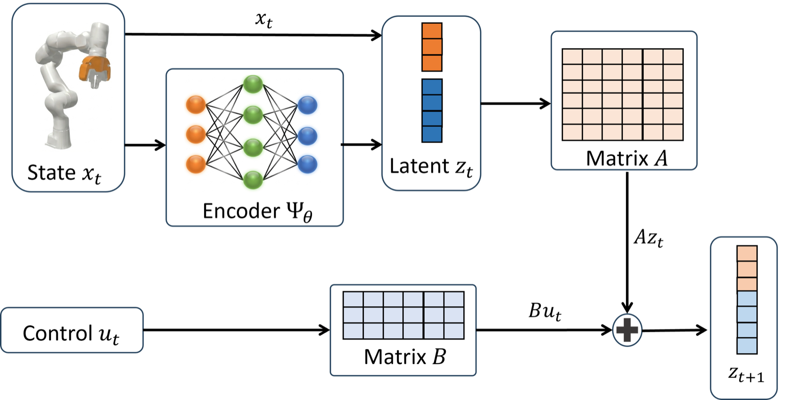
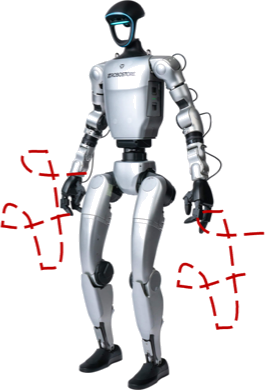
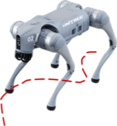
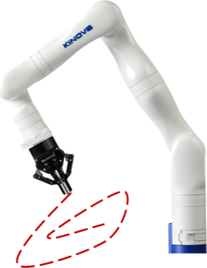

Scaling Law of Neural Koopman Operators
How much data does a robot need to learn a useful dynamical representation?
Sampling error from \(m\) samples plus projection error from latent size \(n\); \(\kappa_n\ge n\) is the leverage of the learned features.
01 · Overview
Neural Koopman models learn representations in which nonlinear dynamics can be approximated by linear systems, enabling efficient prediction and control. But how large should the representation be, and how much data is needed to learn it? We show that the answer depends on both latent dimension and leverage, a measure of how unevenly the representation captures different states. Theory and experiments across six mechanical and robotic systems give practical guidance for scaling data, choosing model capacity, and learning representations for control.
Scale data with capacity
Sample requirements depend on both latent dimension and representation geometry.
Leverage matters
Lower held-out threshold-prediction error in the fixed-feature pendulum study.
Prediction is not enough
Longer Go2 tracking survival in simulation with representation regularization.
02 · Learning linear dynamics
A linear model of a nonlinear robot
A Koopman model maps the robot state \(x\) to a latent state \(z=[x;\Psi_\theta(x)]\), where \(\Psi_\theta\) is a neural encoder, and models the motion as \(z^+=Az+Bu\), with control input \(u\). Prediction becomes repeated matrix multiplication, and model predictive control becomes a convex quadratic program with a closed-form solution.

Black: simulated pendulum. Teal: the model forecast, which encodes the state once and then applies only the linear update. The forecast restarts from the true state after the selected horizon.
At every step, MPC plans 15 steps ahead with the linear model and applies the first input. Set the target angle, or apply a velocity disturbance with Push.
03 · The scaling law
Data and capacity must grow together
A Koopman model makes two kinds of error. The sampling error comes from estimating the linear dynamics \((A,B)\) from \(m\) samples: it shrinks as \(m\) grows, but grows with the latent dimension \(n\), because a larger model has more to estimate. The projection error comes from describing the dynamics with only \(n\) features: it shrinks as \(n\) grows. Their sum is smallest at an intermediate latent size, and that size increases with the data. The bound \(\varepsilon(n,m)\lesssim\sqrt{\kappa_n\log n/m}+n^{-\beta}\) makes this precise; \(\beta>0\) is the rate at which the projection error decays.
Scaling-law explorer
Error for each data size and latent size
Error for one data size
Illustrative theoretical surrogate with unit constants; not measured results or guaranteed optimal dimensions. Increasing \(m\) raises the surrogate-optimal latent size; increasing \(p\) lowers it.
Details
The plots use \(E(n,m)=\sqrt{n^p\log n/m}+n^{-\beta}\) (log is the natural logarithm). The surrogate-optimal latent size is its numerical minimiser over \(n=2\) to \(10{,}000\); the bound-minimising size scales as \(n^\star\asymp(m/\log m)^{1/(p+2\beta)}\), which is \((m/\log m)^{1/(1+2\beta)}\) for well-spread spaces. Under the stated assumptions, \(m\gtrsim\kappa_n\log n\) is a sufficient sample-size scale.
The theoretical scale concerns independent transitions with fixed features; the neural experiments use trajectory segments of 15 transitions, with up to 140,000 training samples per system.
Trained models: data size × latent size
We trained 21 pendulum models with 2 to 16,000 trajectories and three latent sizes. With 2 trajectories, the smallest model has the lowest error; from 20 trajectories on, the largest model does. Select a cell to show that model's forecast.
Median angle error after 1 s
★ lowest measured error for this data size. ⚠ fewer transitions than \(n\log n\).Each trajectory has 15 time steps.
04 · Beyond dimension: leverage
Why dimension alone is not enough
Two observable spaces with the same dimension
Well spread: Fourier features
Concentrated: one localized bump feature
Same dimension \(n\), different leverage \(\kappa_n\): the concentrated space needs more samples under the bound \(m\gtrsim\kappa_n\log n\). Both panels share the vertical axis.
A direct test on the damped pendulum freezes learned encoders with \(n=4\) to \(66\) (five seeds) and fits \((A,B)\) by least squares on \(m\) independent transitions.
- Sampling rate The sampling error decays as \(m^{-0.50}\) to \(m^{-0.52}\), matching the predicted \(m^{-1/2}\).
- Error decomposition The sampling and projection MSEs sum to the total MSE within 0.3%.
- Projection error Decreases with \(n\), from \(1.80\times10^{-4}\) to \(1.34\times10^{-4}\).
Fig. 5c reports the sample threshold \(m_{50}\): the number of transitions at which the least-squares fit becomes well conditioned (\(\|\tilde G_{n,m}-I\|\le\tfrac12\)) with probability \(\tfrac12\).
Sample threshold of each encoder (Fig. 5c)
Leverage lowers the held-out threshold-prediction error by 30% relative to \(N\log N\) (29 full-rank encoders, leave-one-seed-out).
Threshold-law table (Table 3)
| Law for \(m_{50}\) | AIC | Held-out error | Bar |
|---|---|---|---|
| \(N\) | 59.8 | 0.53 | |
| \(N\log N\) | 27.1 | 0.26 | |
| \(N^p\) \((\hat p=1.64)\) | 7.2 | 0.22 | |
| \(\hat\kappa_r\log N\) | 36.9 | 0.44 | |
| \(N\log N\,(\hat\kappa_r/N)^\eta\) \((\hat\eta=0.42)\) | −10.0 | 0.18 |
Lower is better for both columns. AIC rewards fit and penalises parameters; held-out error is the leave-one-seed-out RMS error of \(\log m_{50}\). Deviations from the \(N\log N\) law correlate with \(\log(\hat\kappa_r/N)\) (rank correlation 0.84); the fitted dependence on leverage is sublinear (\(\hat\eta\approx0.4\)).
05 · From prediction to control
Representations for control
Accurate prediction is not sufficient for control. We add two losses to the multi-step prediction loss: a covariance loss that decorrelates the learned features, and an inverse-control loss that keeps the applied input recoverable from latent transitions. +Aux denotes the model trained with both.
Predict 15 steps
Roll the linear model forward 15 steps and compare the predicted physical states with the true states.
Decorrelate the features
Penalise the off-diagonal covariance of the learned features, which encourages better feature conditioning.
Keep the input recoverable
Recover the applied input from consecutive latent states, \(\hat u_t=(B^\top B)^{+}B^\top(z_{t+1}-Az_t)\), and penalise its error.
Similar prediction accuracy does not imply similar control performance.
An unstructured neural dynamics model (NNDM) predicts best on G1 and Go2 but performs poorly with random-shooting MPC. Linear latent dynamics enable efficient quadratic optimization for control.
Robotic control gallery
Survival steps (G1, Go2): steps until the joint tracking error exceeds a failure threshold, averaged over 1,000 test reference trajectories (higher is better). Tracking error (Franka): figure-8 end-effector error (lower is better). Five seeds at \(m=140\)k; the baseline is the Koopman model trained with the prediction loss only.

Unitree G1 humanoid
mean tracking survival
+Aux 64.9 ± 0.7 vs. baseline 61.4 ± 0.8 steps; better in all five seeds.

Unitree Go2 quadruped
mean tracking survival
+Aux 98.7 ± 8.6 vs. baseline 66.4 ± 4.7 steps; better in all five seeds.
Franka Panda arm, figure-8
tracking error relative to the Koopman baseline
+Aux 0.205 vs. baseline 0.233, better in all five seeds; +Aux also tracks more accurately than both baselines (EDMD 0.264, NNDM 0.254).

Kinova Gen3 arm
input recoverability · −15% / −7% prediction loss
With weights selected on validation data, the inverse-control loss improves input recoverability by a factor of 3.7 to 8, and the combined regularizers reduce the prediction loss by 15% at \(m=4\)k and 7% at \(m=140\)k.
G1 and Go2: paired \(t\)-test, \(p=0.003\). Bars show mean ± standard deviation over seeds. Robot images from the paper's system figure.
06 · Resources
Training budget, limitations, code
Training budget estimator
The schedule \(m=c\,n_{\text{enc}}\log n_{\text{enc}}\) sets the number of training samples \(m\) from the number of learned features \(n_{\text{enc}}\). On G1 and Go2, increasing the coefficient \(c\) from 1 to 40 moves the prediction error toward the full-data baseline.
Based on the empirical schedule tested on G1 and Go2. The coefficient 40 is an experimental guideline, not a universal requirement or theoretical guarantee.
Limitations
- The guarantees assume independent samples and a feature space that is fixed, or learned on separate data.
- The theory gives a sufficient sample-size scale, not an exact law; the coefficient 40 is an empirical guideline.
- The G1, Go2, and Franka results are from simulation; the Kinova results use real-robot data.
Code
Training, MPC, and the fixed-feature study: github.com/intelligent-control-lab/Koopman-Scaling.
@article{abuduweili2026scaling,
title = {Scaling Law of Neural {Koopman} Operators},
author = {Abuduweili, Abulikemu and Pang, Yuyang and Li, Feihan and Liu, Changliu},
journal = {arXiv preprint arXiv:2602.19943},
year = {2026}
}